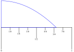

Interpret data in various formats and analyze mathematical models
Communicate results in mathematical notation and in language appropriate to the technical field
This section covers the following mathematical concepts.
Rounding (skill)
Significant Figures (skill)
Determining appropriate rounding from context (critical thinking)
While calculating devices will produce a lot of decimal places, these are not always meaningful nor useful. This section presents different purposes for rounding numbers, examples of using each one, and examples of interpreting numbers we consume in work and life.
First, we will consider what lots of decimal places do and do not mean which will lead to definitions, then we will present a method for reasonably tracking precision, then consider other motivations and matching methods for rounding, and later consider the importance of managing error.
Subsection1.2.1Explanation
When working with measurements, we care about the reasonableness of the results. Suppose four people measure the length of a piece of wood and come up with 1.235 m, 1.236 m, 1.237 m, and 1.234 m. We might conclude that we are confident it is 1.23 m long but we are not certain about the millimeters position. This leads to the concepts of accuracy and precision.
Definition1.2.1.Accuracy.
The accuracy of a measurement is how close the measurement is to the actual value.
Example1.2.2.
If the board referenced above is actually 1.2364 m long then all four measurements are accurate to the second decimal place. The second measurement (1.236 m) is accurate to the third decimal place.
Example1.2.3.
Note \(\frac{22}{7} \approx 3.142857\) is an approximation for \(\pi\text{.}\) Because \(\pi\) to six decimals places (not rounded) is 3.141592, the approximation \(22/7\) is accurate to only 2 decimal places (i.e., 3.14).
Note, \(\pi\) is not a measurement, rather it is defined theoretically. Thus we can produce an approximation that is as accurate as we have time and will to do. If curious, ask the nearest calculus instructor for details.
Note, if we are measuring something, it is because it is not possible to know the actual value. In the example of measuring the board all we can do is use measuring tools and our use of all such tools has a margin of error. The actual length of the board is a mystery. Because of this we cannot determine the exact value of many kinds of data nor determine how accurate our measurement is. Instead we will settle for repeatability. If we get the same result often enough, we can convince ourselves that it is accurate.
Definition1.2.4.Error.
The error of a measurement is the difference between the reported measurement and the actual value.
Example1.2.5.
The number of people at an outdoor concert was 2453. If someone estimated that the number of people was 2500, then that estimate is accurate to 1000’s place, but has an error of only \(2500-2453=47\text{.}\)
Definition1.2.6.Precision.
The precision of a measurement is the size of the smallest unit in it.
Note we can have high precision with low accuracy. That is, just because we write a lot of decimal places does not mean that number is close to the actual value of the measurement.
Example1.2.7.
The answer to a homework question is 5.7632. If a response given is 5.7647 what are the precision and accuracy of the response?
Precision is effectively the number of decimal places. This is precise to 4 decimal places (the 10,000th position).
Because the response matches the actual value to 2 decimal places (the 100ths position), it is accurate to 2 decimal places.
Because \(5.7647-5.7632=0.0015\text{,}\) the error is 0.0015.
Figure1.2.8.Introduction to Precision and Accuracy
How do we end up with parts of measurements which are not accurate? Consider the following.
Example1.2.9.

When measuring the width of the blue, curved shape using the ruler (measurement in inches), it is clearly longer than 3/4″ and less than 7/8″. The right side of the shape appears to be less than half way between 3/4″ and 7/8″. Because it appears to be closer to 3/4″, we can state the width is 3/4″. Because the ruler does not have finer markings (e.g., 16ths or 32nds), we cannot be more precise.
We know this measurement is accurate to the nearest 1/8″, because the ruler has those marked and, in this case, we can be confident it is closer to the left side.
To estimate the error we note that the right edge is less than half way between the markings. Half way would be 13/16″ or 1/16″ farther. Thus we can state that the shape is 3/4″ wide with an error that is less than 1/16″.
While other tools for measurement can be more precise, every tool has a limit to its precision similar to this example. We should always be aware of the limitations of measurements when we use them.
Subsection1.2.2Significant Figures
It makes no sense to write numbers that are more precise than they are accurate. For example writing 3.142857 (from the approximation \(\pi \approx \frac{22}{7}\)Example 1.2.3) makes no sense, because it is only accurate to the hundreds position (i.e., 3.14). It also makes no sense to perform arithmetic on digits that are not accurate. This section presents a reasonable way of tracking meaningful precision and rounding to maintain it. This will be used in many of the problems involving data from measurments for the rest of the text.
When writing down measurements we need a way to indicate how precise the measurement is. Significant digits, also called significant figures or simply “sig figs”, are a way to do this.
The rules for writing numbers with significant digits have two parts: non-zero digits, and zero digits.
All non-zero digits are signficant.
Zeros between non-zeros are significant.
Any zeros written to the right of the decimal point are significant.
If zeros between non-zero digits (on left) and the decimal point (on right) are supposed to be significant, a line is drawn over top of the last significant digit.
If the zero to the left of the decimal is significant, the decimal point may be used with no digits to the right (the bar is an easier to read choice however)
For numbers less than 1, zeros between the decimal point (on left) and non-zero digits (on right) are not significant.
We can summarize these rules as: write only digits that you mean, and if it is ambiguous, clarify.
Significant digits apply to numbers resulting from measurements. That is, they apply when there is doubt about the accuracy of the number. These will be mixed with exact numbers (numbers with infinite precision). For example the 1/2 in the area of a triangle (\(\text{Area}=1/2bh\)) is an exact number.
Example1.2.10.Writing Significant Digits.
Each of these numbers is written with five (5) significant digits.
\(\displaystyle 10267\)
\(\displaystyle 1.2400\)
\(\displaystyle 7201\bar{0}\)
\(\displaystyle 53010.\)
\(\displaystyle 2834100\)
\(\displaystyle 0.0010527\)
Checkpoint1.2.11.
We also need rules for arithmetic with significant digits. These are based on two principles
A result of arithmetic cannot be more precise than the least precise measurement.
Arithmetic does not increase accuracy.
For addition and subtraction the result (sum or difference) has the same precision as the least precise number added or subtracted. After adding or subtracting we round to the farthest left of the last significant digits.
Example1.2.12.Subtraction with Significant Digits.
\(11050-723 = 10327 \approx 10330\text{.}\) The last significant digit of 11050 is in the 10’s position (the 5). The last significant digit of 723 is in the 1’s (unit) position (the 3). Because 11050 is less precise than 723, the last significant digit of the result is in the 10’s position. We do not know the 1’s position of 11050, so we cannot know the 1’s position in the result.
Example1.2.13.Addition with Significant Digits.
\(311+8,310+202,200 = 210,821 \approx 210,800\text{.}\) This is rounded to the hundreds position because the least (farthest left) significant digit of the three numbers is in the 100’s position (in 202,200). The extra precision of the other two numbers is lost because we don’t know to what they should be added.
The significant digits addition/subtraction rule basically says that adding precise data to imprecise data does not increase the precision of the imprecise data. For those who are curious, an explanation of why this rule works is in this video.
Exact numbers may be mixed in calculations with addition/subtraction. For example suppose we are converting temperature from Fahrenheit to Celsius based on a thermometer reading. The formula is \(C=\frac{5}{9}(F-32)\text{.}\) The 32 and 5/9 are exact numbers (part of the definition of the Fahrenheit and Celsius systems). The F (measured temperature) would have limited precision and therefore determine the precision of the result.
Checkpoint1.2.14.
For multiplication and division the result (product or quotient) has the same number of significant digits as the least number of signficant digits of the input numbers.
Example1.2.15.Division with Significant Digits.
\(11050/722 \approx 15.30470914 \approx 15.3\text{.}\) This is rounded to three (3) significant digits because \(722\) has only 3 significant digits. The fourth significant digit in 11050 (the 5) would be multiplied by the unknown digit after the 3 in 15.3, so we do not know what that would be.
Example1.2.16.Multiplication with Significant Digits.
\(17 \times 14\bar{0} \times 3.178 = 7563.64 \approx 7600\text{.}\) This is rounded to two (2) significant digits because \(17\) has only two significant digits. The extra precision of the other two numbers is lost.
The significant digit multiplication/division rule basically says that digits that were multiplied by imprecise data cannot be precise. For those who are curious, an explanation of why this rule works is in this video.
Exact numbers may be mixed in calculations with multiplication and division. The following example illustrates how we determine the resulting number of significant digits when exact numbers are mixed with measurements.
Example1.2.17.
Suppose we are converting temperature from Fahrenheit to Celsius based on a thermometer reading. The formula is \(C=\frac{5}{9}(F-32)\text{.}\) The 32 and 5/9 are exact numbers (part of the definition of the Fahrenheit and Celsius systems).
If we read the temperature as 44.7° F then the conversion is as follows.
\begin{align*}
C & = \frac{5}{9}(F-32)\\
C & = \frac{5}{9}(44.7-32)\\
& = \frac{5}{9}(12.7) \text{ Maintains precisions to tenths place}\\
& \approx 7.055555 \text{ Maintains 3 sigfigs}\\
& \approx 7.06 \text{ So, round to 3 sigfigs}
\end{align*}
In the subtraction step the 32 is exact so the precision is determined by solely 44.7 (tenths place). In the multipication step the 5/9 is exact so the precision is determined by the 12.7 (three significant digits).
Checkpoint1.2.18.
The rounding for significant digit rules is applied at the end of a calculation. That is if we have a mix of addition, subtraction, multiplication, and division then we do all of the operations, track the significant digits that should apply for each operation and apply the rounding at the end.
This example also illustrates tracking significant digits and illustrates a way you might keep track of which digits are significant in each step. The rightmost (smallest place value) digit that is significant is underlined. This is not a mathematical notation, but rather a convenient way to track the significant digits.
Example1.2.19.Multi-Step Arithmetic with Significant Digits.
By order of operations we first calculate \(17.9+1.23 = 19.13\text{.}\) Note that the result 19.13 is significant only to the first decimal place because 17.9 is only significant to the first decimal place. Second by order of operations we calculate \(39 \cdot 19.13 = 746.07\text{.}\) This is the product of a number with 2 significant digits and one with 3 significant digits so the result should have only 2 significant digits which would be the 10’s place (the 4). The last calculation is \(11,728+746.07=12,474.07\text{.}\) 11,728 is significant to the one’s place but the 746.07 is significant only to the 10’s place. This means the final result is rounded to the 10’s place so \(11,728+39(17.9+1.23) \approx 12,470\text{.}\)
When we round we lose 35 units. If this seems like a lot consider the following. If all these measurements were rounded up (e.g., 21 was rounded from 20.5), then the value could have been
Using these two possibilities we see that the value could be anywhere from 121.125 to 146.64. The one hundred is the only digit about which we can be certain. That is why it is the only significant digit and why we eliminate (replace with zero) all the others.
If losing this much precision is a problem, then we need to obtain more precise measurements.
Significant digts communicates which digits are definitely meaningful. There are other motivations for rounding which lead to keeping more digits. This will be addressed in the next section.
Checkpoint1.2.21.
Subsection1.2.3Rounding
Significant digits uses rounding to remove non-useful precision. This section presents various motivations for rounding and types of rounding and motivations for each.
Table1.2.22.Reasons for Rounding
Reality Constraints
For example we cannot buy partial packages or have fractional people
Remove Detail
For example when describing the population of a nation
Control Error
When used in significant digits
The reason for rounding determines how we do it. Consider the following reality constraints requiring rounding. For example if we need 21 eggs and eggs are sold in cartons of one dozen (12) eggs, we need \(21/12=1.75\) cartons. Since we cannot purchase part of a carton, we must round 1.75 up to 2, and purchase 2 cartons.
Note in this example reality requires us to round up to the nearest integer. We round to an integer because we cannot purchase fractional cartons of eggs. We had to round up, because rounding down would leave us with insufficient eggs (and we are hungry).
Suppose you have a bank account containing $11,410 that accrues 1.65% interest. The bank calculates the payment should be \(\$11,410 \cdot 0.0165 = \$188.265\text{.}\) The bank will pay you $188.26. They round to the nearest one hundredth because cents is a unit which can be paid. They round down, because they like paying less.
For removal of detail consider reporting the population of a country. We might report the population as over 9 million rather than 9,904,607. There are multiple motivations for this rounding. Note the population is likely changing multiple times per day, so more precision in the number does not equal more accuracy. Also, because of the scale (millions) the detail about how many ones, tens, hundred, and thousands looses meaning.
When reporting on salary ranges we might report a range between $60,000 and $80,000. That the range is actually $61,233.57 to $80,290.11 is unlikely to change a decision. The applicant will ask about the exact salary after deciding the position is a good fit. A common usage of removing detail is when we care about the scale of things rather than the count.
Rounding to control error is the use of significant digits.
Before considering context, we will practice rounding numbers. Note we can round to any digit. We can round up, down, or to the nearest number (what is meant by “round” if neither up nor down are specified). Context or instructions will specify which digit and which type of rounding.
Example1.2.23.Rounding Up/Down.
(a)
Round 72481 down to the nearest hundred.
Solution.
72400 is rounding down: we leave the 4 (hundred position) alone and “truncate” (turn to 0) all digits to the right. Note \(72400 \le 72481\text{.}\)
(b)
Round 72481 up to the nearest hundred.
Solution.
72500 is rounding up: we increase the 4 to a 5 and “truncate” (turn to 0) all digits to the right. Note \(72500 \ge 72481\text{.}\)
(c)
Round 72481 the nearest hundred.
Solution.
Because 72481 is closer to 72500 than it is to 72400, we round to 72500. We can recognize that we should round up because the tens position is \(8 \ge 5\) which means rounding up results in a closer number. We could also recognize the need to round up by calculating \(500-481=19\) and \(481-400=81\) and noticing that \(19 \le 81\) (round up is closer).
Example1.2.24.Rounding Up/Down.
(a)
Round 72481 down to the nearest thousand.
Solution.
72000 is rounding down: we leave the 2 (thousands position) alone and “truncate” (turn to 0) all digits to the right. Note \(72000 \le 72481\text{.}\)
(b)
Round 72481 up to the nearest thousand.
Solution.
73000 is rounding up: we increase the 2 to a 3 and “truncate” (turn to 0) all digits to the right. Note \(73000 \ge 72481\text{.}\)
(c)
Round 72481 to the nearest thousand.
Solution.
Because 72481 is closer to 72000 than it is to 73000, we round to 72000. We can recognize that we should round up because the hundreds position is \(4 < 5\) which makes it closer to go down. We could also recognize the need to round down by calculating \(3000-2481=519\) and \(2481-2000=481\) and noticing that \(481 \lt 519\text{.}\)
Example1.2.25.Rounding to Different Precisions.
Round 72321.83 to the specified precision.
Thousands: 72000
Ones:72322
Tenths: 72321.8
Checkpoint1.2.26.
Next we need to consider when to use each type of rounding.
Example1.2.27.
Some floors are covered in carpet tiles. These are squares of carpet that are tiled to cover a floor. Suppose the carpet tiles are square with side length 20″. If a room is 50 feet by 38 feet, how many carpet squares do we need?
First lets figure out how many tiles will go across the 50 feet. Before we can we need to convert feet to inches, so we can compare the width of the room to the carpet square width. 50 feet is \(50 \text{ ft} \times \frac{12 \text{ in}}{\text{ft}} = 600 \text{ in}\text{.}\) We want to know how many 20 in tiles fit into 600 in. \(\frac{600 \text{ in}}{20 \text{ in}} = 30\) tiles across. Notice that the units divide out which indicates we set this up correctly.
Next, lets figure out how many tiles will go across the 38 feet. 38 feet is \(38 \text{ ft} \times \frac{12 \text{ in}}{\text{ft}} = 456 \text{ in}\text{.}\) This will require laying \(\frac{456 \text{ in}}{20 \text{ in}} = 22.8\) tiles across. For each 0.8 of a tile we must cut a tile leaving only 0.2 of a tile left. This is too small to use elsewhere. Thus for each of these we will use a whole tile resulting in needing 23 tiles across (rounding up to have enough).
Finally we can count the number of tiles which is \(30 \times 23 = 690\) tiles.
Could we use the 0.2 part of a tile that results from cutting at the end in another row. That depends. Doing so will start the next row shifted by 0.2, so if the tiles need to be aligned due to their color/pattern this will not work. If the color is solid or designed to be offset, we can do this and save money. Knowledge from carpet installation is required to determine this rounding.
Example1.2.28.
Suppose you baked three (3) dozen cookies and are distributing them equally between 7 people. How many cookies does each person receive?
There are \(3 \cdot 12 = 36\) cookies. Each person can have \(36/7 \approx 5.1\) cookies. Because cutting cookies into pieces is how the cookie crumbles, we must round this down to 5 cookies per person.
Curious minds want to know what happens with the rest of the cookies. Notice there will be \(7 \cdot 5 = 35\) cookies given away leaving just one cookie which the baker can enjoy.
Subsection1.2.4Greatest Possible Error
We have acknowledged that measurements will always have error. We have considered ways to round that are practical for the circumstances. Part of this depends on controlling the error. This section presents how to calculate the maximum error (worst case scenario). Typically we use this to ensure that error will not cause problems.
Because our rule for rounding is digits 0-4 round down and digits 5-9 round up, this rounding will always result in a greatest possible error of 5 in the position to the right of the one rounded. Consider the following.
Example1.2.29.
What is the greatest possible error if 130 was rounded to the nearest 10?
One possibility is that 130 was rounded down. Then the original number was one of 130, 131, 132, 133, or 134. 134 is the farthest away from 130 at \(134-130=4\text{.}\)
The other possibility is that 130 was rounded up. Then the original number was one of 125, 126, 127, 128, or 129. 125 is the farthest away at \(130-125=5\text{.}\)
Thus the greatest possible error was 5 from the case that 125 was rounded up.
Note in this solution we assumed the number rounded was an integer. However, if we allowed for 134.927 and 125.01 the result would be the same. the extra digits do not change the rounding.
Example1.2.30.
What is the greatest possible error if 9.31 was rounded to the nearest hundredth?
Solution.
The largest possible error is if 9.31 was rounded up from 9.305. Thus the greatest possible error is 0.005 or 5 one thousandths.
To determine the greatest possible error, we have to know what type of rounding was used. In most measurements (i.e., significant digits) standard rounding will be used. For example think about measuring on a ruler: if the object is not exactly on one of the lines, you will choose the closest one (left or right). Moving to the closest one is rounding.
The next example calculates the greatest possible error from rounding up (as opposed to rounding).
Example1.2.31.
What is the greatest possible error if 223 was rounded up to the nearest unit?
Solution.
223 could have been rounded up from 222.1. But it could also have been rounded up from 222.01 or anything else. Thus the greatest possible error is less than 1 (\(223-222=1\)).
Checkpoint1.2.32.
Checkpoint1.2.33.
Exercises1.2.5Exercises
Counting Significant Digits.
Determine the number of significant digits using the standard notations.
1.
2.
3.
4.
5.
6.
Significant Digit Arithmetic.
Perform the arithmetic indicated and write the result with the correct number of significant digits.
7.
8.
9.
10.
11.
12.
13.
14.
15.
16.
17.
Greatest Possible Error.
Determine the greatest possible error for each number or calculation.